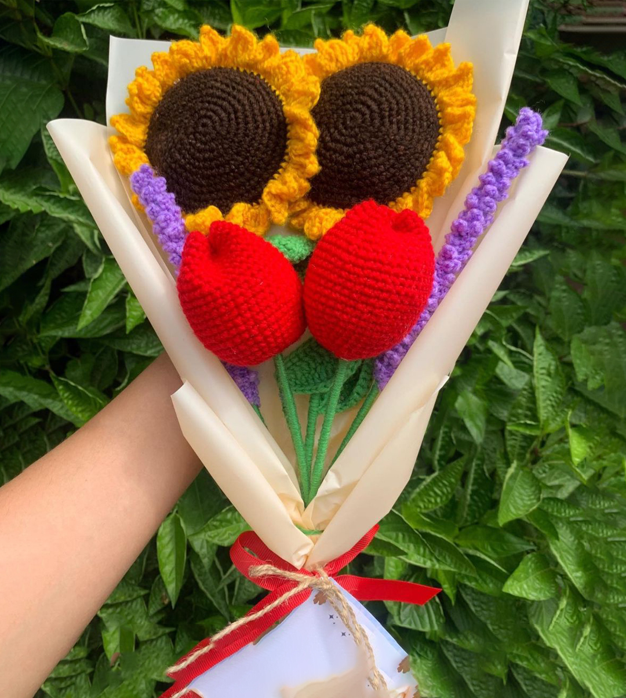

Amigurumis
Los amigurumis son pequeñas joyas tejidas que cobran vida en tus manos. Con tamaños que oscilan entre 7 cm y 30 cm, estos entrañables personajes están hechos con minuciosidad y cariño.

Flores
Desde rosas elegantes hasta margaritas juguetonas y flores exóticas, nuestra colección de flores de crochet es una forma encantadora de celebrar la naturaleza en toda su diversidad.
Prendas
Las prendas tejidas con crochet son sinónimo de estilo y comodidad. Cada prenda se teje a mano con la lana más suave, creando piezas que abrazan tu cuerpo con calidez y elegancia.
Accesorios
Los llaveros tejidos a mano son pequeñas expresiones de estilo y personalidad. Colgados en tus llaves, mochila o bolso, añaden un toque de encanto artesanal a tu vida cotidiana.